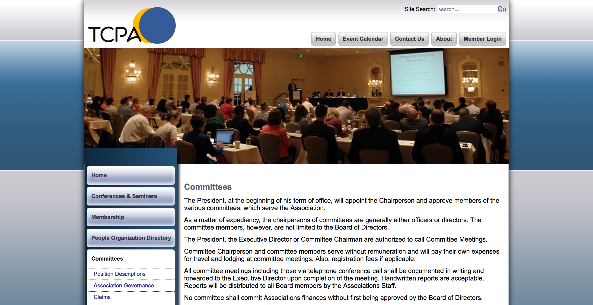

TCPA
TCPA*, established in 1967, is one of the largest professional associations in the insurance industry. As a consultant, I helped TCPA restructure their member portal.
-
Year
- 2016
Duration
- 4 months
-
Roles
- UX Design
- UI Design
Client
- TCPA
- New York, NY
-
Tools
- Axure RP
- Sketch
- Photoshop
- Illustrator
- PowerPoint
-
Team
- Aaron Faucher UX/UI Design
- Bruce Carson Lead Developer
Challenge
-

Process

Research


Synthesis
Through my research, I discovered a few key insights to guide the design of Jibo's Compliments skill.


Ideation


Results